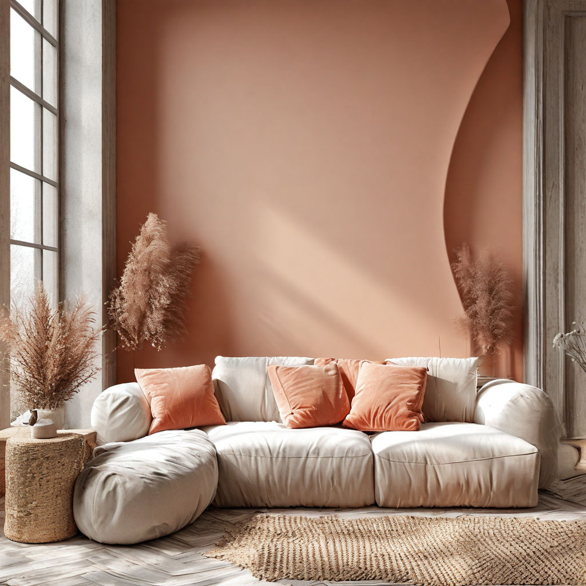

Тренды в дизайн-интерьере
Объём фактуры
Уютная мягкость мебели и ковров должна быть видна издалека. В моде — матовая обивка с фактурой овечьей
шерсти и каракуля и ковры в технике тафтинг.
Чтобы воплотить этот тренд более масштабно, можно добавить визуально мягкие изгибы и несовершенства
на стены. Фактура должна быть неглубокой, а штрихи — крупными и достаточно «рыхлыми», чтобы тени не
создавали драматичную контрастность.
Тихая роскошь: дерево, лён, бархат и камень
Тема «невидимой эстетики богатства» в последние месяцы стала популярна. Кроме того, становится всё
больше сторонников отказа от гиперпотребления. Комбинация этих идей влияет не только на индустрию
моды, но и на интерьеры и архитектуру.
В тренде — оформление пространств в стиле дорогих отелей:
единообразное, без явно выдающихся деталей, но с натуральными материалами, которые способны передать
идею «не нужно многого — достаточно лучшего».
Интерьеры в стиле Quiet Luxury в 2024 году можно создать даже с помощью материалов из обычных массмаркет-магазинов
и локальных марок. Например, выбирать матовый велюр и лён спокойных тёплых оттенков, однотонные обои с фактурой под
текстиль, тонированное натуральное дерево, мебель и светильники простых форм.
Абрикосовый, персиковый и тёплый белый
В целом все интерьерные тренды к 2024 году подчиняются одной главной тенденции: делать пространства уютнее, визуально
теплее и добавлять в дизайн отсылки к винтажным стилям. Это влияет и на актуальные палитры, поэтому в моду входят
светлые оттенки розово-оранжевого и цвет неидеально отбелённой шерсти.
Актуальные абрикосовый и персиковый
— нетребовательные цвета: их легко сочетать и с яркими оттенками, и с пастелями.

Дизайнеры
Мартин Лоренс-Буллард - “голливудский дизайнер”, клиентами которого являются Кристина Агилера, Оззи Осборн, Элтон Джон, Шер, Эдвард Нортон и многие другие звёзды мировой известности.
Буллард отдаёт предпочтение эклектическому стилю, его интерьеры наполнены оттенками, орнаментами и отличаются соединением разных культур и эпох в одном проекте. Дизайнер создает особый колорит, работая с тканями и разрабатывая новые решения непосредственно под заказчика, что делает каждый его проект неповторимым и непохожим. В портфолио коммерческих интерьеров отели Chateau Gutsch в Люцерне, The Prospect Hollywood и Hotel Californian, спа-комплексы Casa Laguna и Sands Hotel & Spa, также со всеми объектами можно ознакомиться на сайте Martyn Lawrence Bullard Design
Отель California в Санта-Барбаре
Карло Рампацци - дизайнер и архитектор из Швейцарии, известный нестандартным подходом к оформлению интерьеров: игра на контрастах, объединение необычных форм и красок, смешение разных стилей.
Рампацци создает оригинальную, запоминающуюся мебель, которая наилучшим образом вписывается в антураж его проектов и дополняет идеи в стиле “нео-максимализма”. Обустройство отеля Carlton в Сент-Морице, создание интерьера обувного бутика Berluti в Париже, проект Il Piacere di Abitare с Алессандро Мендини принадлежит авторству Карло Рампацци. Сам дизайнер считает, что его идеальным клиентом является Алиса в стране чудес.
Резиденция в Бейруте
Келли Хоппен - известный британский дизайнер, чьи заслуги отмечены II Орденом Британской Империи. Создает элегантные и драматические интерьеры в стилистике “нейтральной роскоши”. Особенностями ее работ считается использование монохромной палитры красок, в основе которой натуральные цвета: бежевый, песочный, жемчужный, слоновой кости, оливковый. Однако, любимый цвет дизайнера - тауп, смесь серого и коричневого - без его использования не обходится ни один проект. Келли Хоппен утверждает, что ее дизайн “опирается на решетчатую схему и симметрию - на выстроенный и упорядоченный линейный мир”, при этом ей “нравится порой всё перевернуть, взорвав застывшую форму различными асимметричными элементами”.
Элитная резиденция Linden Luxury Residences
Тут вы найдёте лучшие советы по созданию уюта
в вашем доме - HouseGlam
Связаться с нами
Наши соцсети